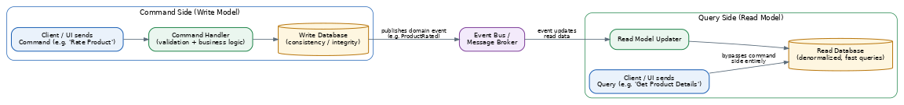
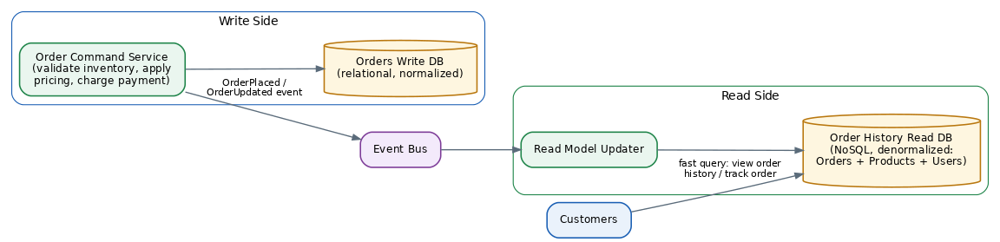

CQRS (Command Query Responsibility Segregation)
Table of Contents
Overview
CQRS stands for Command Query Responsibility Segregation — an intimidating name for a fairly simple idea: use a different model for writing data than the model you use for reading it. The term was popularized by Greg Young and later explained widely by Martin Fowler. In everyday application design, a command is any operation that changes data — placing an order, updating a profile, rating a product — while a query is any operation that only reads data and never changes it, like viewing order history or checking an account balance. CQRS's core claim is simply that these two very different jobs shouldn't be forced through the exact same model and the exact same code path.
That sounds like a small idea, but it has a large effect on how systems get built — especially in microservices, where each service already owns its own database and answering a single question often means recombining data from several sources. It's worth saying up front, and worth returning to later: CQRS is a powerful tool for specific, complex situations, but most experts, including Fowler himself, caution that it adds real complexity and should not be reached for by default.
The Problem: Traditional CRUD Operations
Most applications are built around CRUD — Create, Read, Update, Delete — all funneled through one shared data model. That's simple and works well for straightforward applications where reading a record looks basically like writing it. As applications grow more sophisticated, though, that single shared model starts to strain. Reads and writes often have very different needs and very different volumes: a product catalog might be read thousands of times for every single write, like a price update, so the two sides really want to be optimized in opposite directions. A shared model also creates a data-mismatch problem — fields that matter enormously for updating a record, like validation rules or internal status flags, are often irrelevant clutter to someone just trying to display it.
There's also a very practical problem: lock contention. When many operations — some reading, some writing — hit the same tables at the same time, they can block each other and slow everything down. In microservices specifically, once data is split across multiple services each with its own database, a single query that needs to "join" information from Orders, Products, and Users becomes awkward, since there's no longer one database to run that join in. Finally, mixing read and write concerns in the same model creates a security headache too: it becomes harder to tightly control who's allowed to change data versus who's just allowed to view it, since both flow through the same code paths and objects.
CQRS: A Solution
CQRS's answer is to formally split the system into two sides: a command side that handles anything that changes data, and a query side that handles anything that reads data — each with its own model, its own classes and logic, and sometimes even its own database entirely. The command side is designed around business intent rather than raw field updates. Instead of a generic "update this record" operation, it models an actual business action — "Book Hotel Room," "Rate Product" — carrying the validation and business rules specific to that action, so the write side stays focused on protecting data integrity and enforcing the rules that matter.
The query side, by contrast, has no business rules or validation at all — its only job is to serve up data in whatever shape is most convenient and fast for whoever is asking, often via read-optimized copies of the data (sometimes called materialized views or projections) pre-shaped for exactly the questions being asked. Because the two sides are separate, they need a way to stay in sync: in most real implementations, the write side publishes an event whenever it changes something, and the read side listens for that event and updates its own optimized copy accordingly. That means the read side isn't always instantly up to date — it becomes eventually consistent with the write side, catching up shortly after each change.
The Architecture
CQRS architectures generally come in two levels of maturity. In the simplest version, the command model and query model still share one underlying database, but the application code itself is split into two distinct paths — a write path with full validation and business logic, and a read path that just fetches and formats data with no business logic attached. That alone already gives cleaner code and a clearer separation of concerns, without adding any new infrastructure.
The more advanced version goes further and gives the command side and query side entirely separate data stores, which can even run on different database technologies — for instance, a relational database for writes (great for enforcing rules and integrity) and a fast document database for reads (great for pre-shaped, quick-to-fetch views). This is the version that unlocks independent scaling: if a system is read-heavy, teams can add many read replicas or read-optimized nodes without touching the write side at all.

The Inner Workings
When a command arrives, it flows in a predictable way: the client sends a command object describing the intended business action, a command handler receives it and runs validation and business rules — for example, checking that a hotel room is actually available before allowing a booking — and if everything checks out, the handler updates the write database and, often, publishes an event describing what just happened.
Queries work completely differently, and far more simply: the client sends a query (say, "get this customer's order history"), and a query handler fetches data directly from the read database, formats it into a plain data object — often called a DTO, or Data Transfer Object — and returns it. There's no validation step and no business logic here; the read side's entire purpose is to answer questions quickly.
Synchronization between the two sides usually rides on events: when the write side successfully saves a change, it publishes a domain event describing exactly what changed, and a separate process — sometimes part of the read side, sometimes a dedicated updater — subscribes to these events and updates the read database, often by rebuilding or refreshing a materialized view. Some teams push this further by combining CQRS with Event Sourcing, where the write side stores the full history of every event that ever happened instead of just the current state, deriving current state by replaying that history. In that setup the event store becomes the single source of truth, and the read side's materialized views can always be rebuilt from scratch by replaying history — powerful, but noticeably more design complexity.
An Example: Rating Products in an Online Store
Imagine an online store where customers can rate products and also browse a product catalog. On the command side (write model), a RateProduct command carries the product ID, the user ID, and the rating value. A command handler receives it, looks up the product in the write database, applies the rating using business logic — for example, preventing a user from rating the same product twice — and saves the change:
RateProduct(productId, userId, rating):
product = writeRepository.find(productId)
product.applyRating(userId, rating) // business logic lives here
writeRepository.save(product)
publish ProductRatedEvent(productId, newAverageRating)On the query side (read model), a separate, simple interface just answers questions, with no business logic at all:
ProductsReadModel:
findById(productId) -> ProductDisplay { id, name, price, averageRating, inStock }
findByName(name) -> list of ProductDisplay
findOutOfStockProducts() -> list of ProductInventoryWhen ProductRatedEvent is published, a small listener updates the read model's stored average rating for that product, so the next time someone views the product page they see the updated rating — usually within moments, but not necessarily instantly.
Issues, Special Considerations, and Performance Implications
The biggest and most important trade-off in CQRS is eventual consistency: because the read side updates asynchronously after the write side, there's a window of time — sometimes milliseconds, sometimes longer under heavy load — where the read model shows slightly stale data. This "replication lag" has to be designed for explicitly; after a customer places an order, for instance, the confirmation screen might read directly from the write side (or show a "processing" state) rather than immediately querying the read model.
CQRS also adds genuine complexity, more so once combined with Event Sourcing — teams now have to write and maintain code for commands, command handlers, events, event handlers, and read models, considerably more moving parts than a single shared CRUD model. Because of this, CQRS is best applied only to the specific parts of a system (sometimes called "bounded contexts") that truly benefit from it — like a complex booking engine — rather than being applied uniformly across an entire application. Messaging reliability becomes its own concern too, once events flow between the command and query sides: messages can fail, arrive twice, or arrive out of order, so consumers need to handle duplicates safely (idempotency) and cope with retries.
On the positive side, the performance benefits can be significant for the right workload. Since reads and writes are decoupled, each side scales independently — a system read 100 to 1000 times more often than it's written to (a common ratio for product catalogs) can scale out many cheap, fast read replicas without adding any load or complexity to the write side. Fowler's guidance is a useful rule of thumb: reach for CQRS when there's a genuinely complex domain or a large read/write imbalance that justifies the extra complexity, and avoid it for simple CRUD-style applications, where it mostly just adds risk without a matching benefit.
System Design Examples
CQRS tends to appear in systems with complex business rules on the write side, a heavy imbalance between reads and writes, or both:
- E-commerce order management: placing an order — write side, with inventory checks, pricing rules, and payment validation — is handled completely separately from browsing the product catalog or viewing order history — read side, using a denormalized view combining products, users, and orders for fast display.
- Ticket booking systems: reserving a seat involves careful write-side logic to avoid double-booking, while searching for available events and seats is a read-heavy operation best served by a separate, fast, cache-friendly read model.
- Social media feeds: posting content (a write) is relatively rare compared to the enormous number of times a feed gets read and re-read, making a precomputed, denormalized read model essential for performance.
